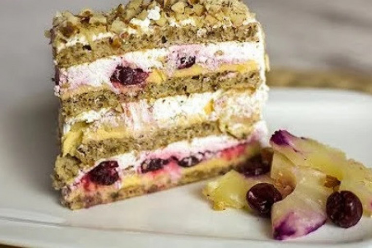
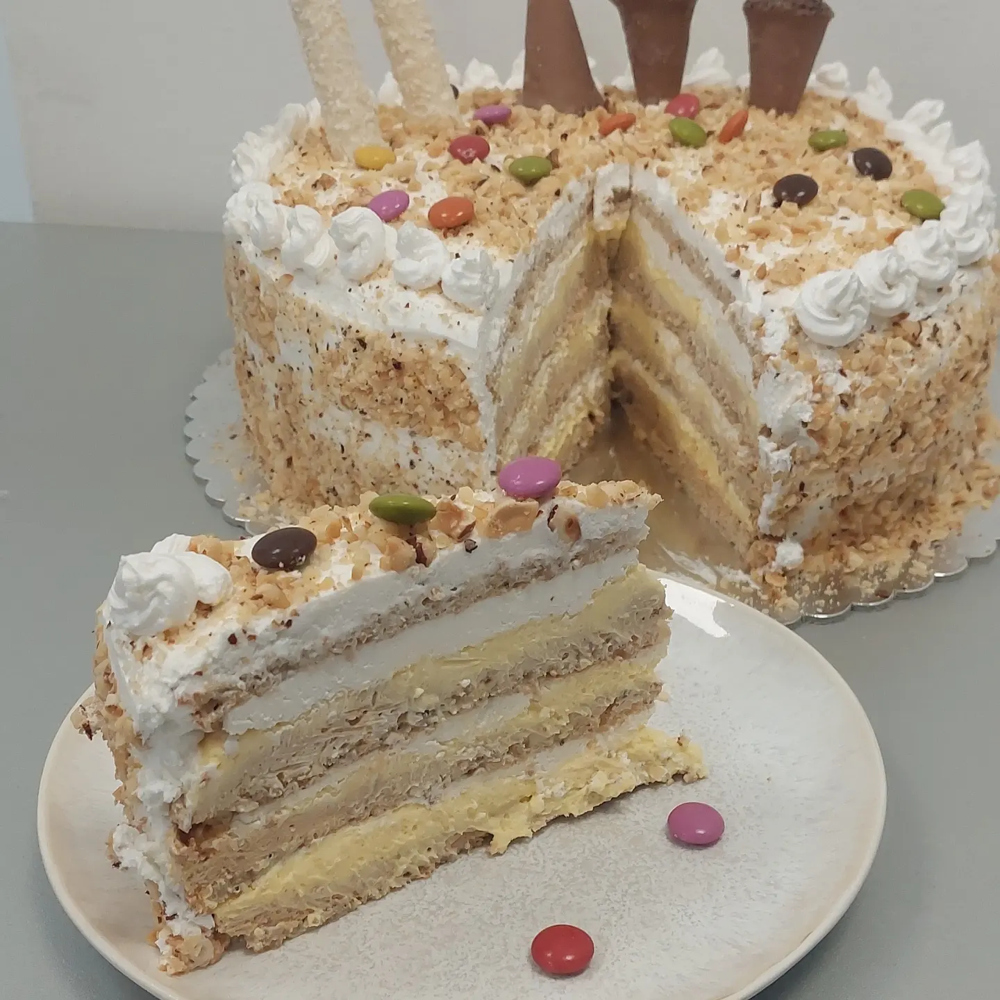
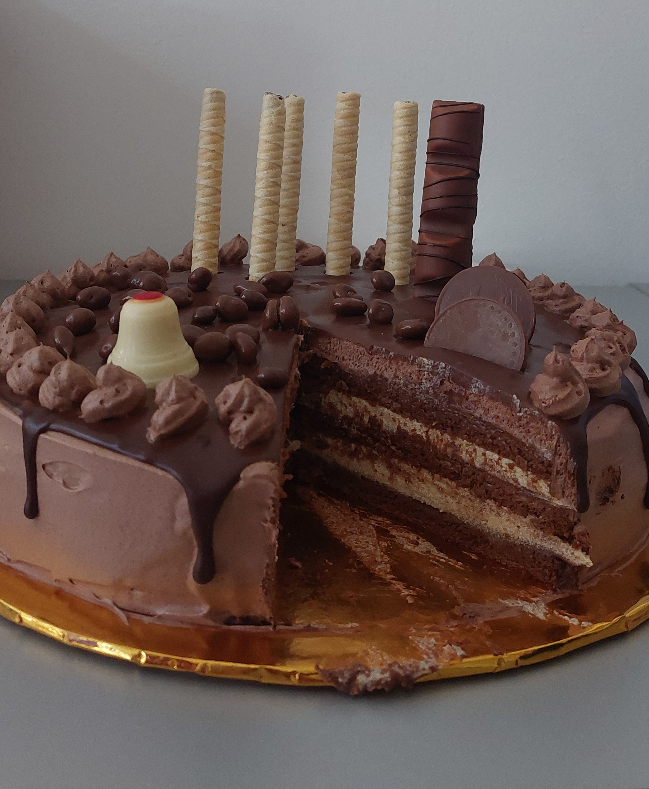
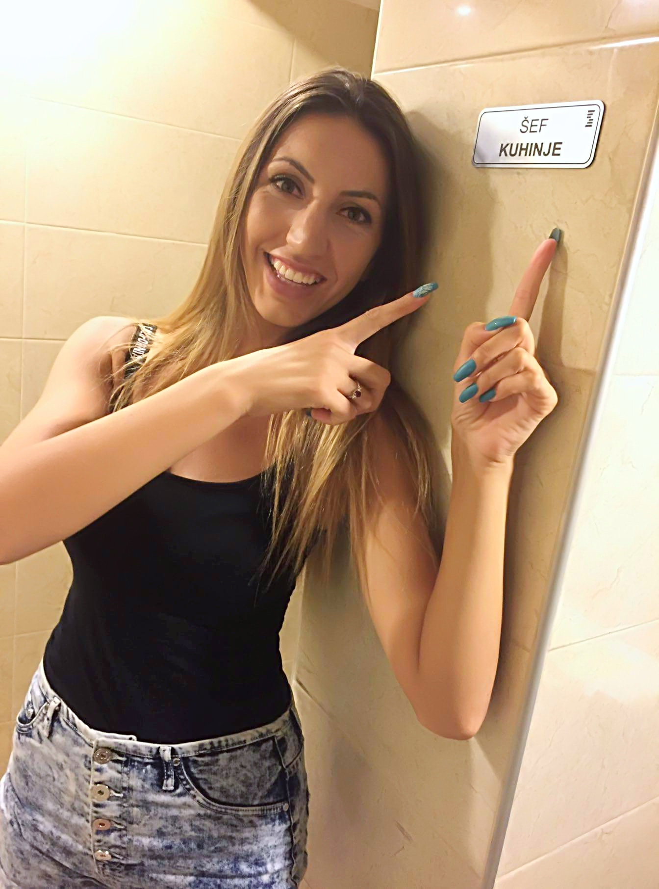

TORTE DVE I PO DOMAĆICE

1. Prvo pomešati suve sastojke: 50 g mlevenog keksa, 75 g mlevenih oraha i 50 g brašna. 2. Posebno u posudu dodati 5 belanaca, mešati dok se ne stvrdnu. 3. Uz mešanje postepeno dodavati 100 g šećera. 4. Dodajte pripremljene suve sastojke i sve sjedinite pjenjačom. 5. Smesu rasporedite na masni papir u kalupu veličine 23 k 36 cm. 6. Stavite u zagrejanu rernu na 180 stepeni oko 15-20 minuta. 7. Ponoviti postupak pečenja kore sa istom količinom sastojaka. 8. Sa ohlađenih kora skinuti masni papir. 9. Svaku koru prepoloviti. 10. Dobićete 4 jednake kore. CUSTARD 1. U paru dodajte žumanca i šećer i umutite ih dok ne postanu penasti. 2. Dodati 100 g isečenog putera na sobnoj temperaturi i kratko promešati. 3. Pripremljene sastojke kuvati u ključaloj vodi, na pari. 4. Mešajte oko 10 minuta, primetićete da se smesa zgusnula. 5. Kuvan krem prebacite u drugu posudu da se ohladi, nije potrebno da ga pokrivate. 6. U hladnu smesu dodati 150 g narezanog putera sobne temperature i ekstrakt vanile, sve dobro izmiksati mikserom. 7. Posebno napraviti 300 ml kreme za šlag da se malo stvrdne. 8. U krem dodati šlag i sve sjediniti. MOSKVA MONTAŽA TORTA 1. Biskvit stavite na pleh. 2. Namažite tanak sloj kreme. 3. Ređajte ananas isečen na kockice i breskve koje ste prethodno dobro procedili. 4. Premažite sloj kreme koji sjedinite sa voćem dok mažete. 5. Stavite biskvit. 6. Za ovaj deo biće vam potrebno još malo kreme. Jedan deo kreme namazati na biskvit. 7. Ređajte višnje koje ste dosta ranije procedili. 8. Namažite sloj kreme koji sjedinite sa višnjama. 9. Stavite koru. 10. Sada će vam trebati manje kreme. Namažite deo kreme. 11. Pospite malo iseckanih badema koje ste ranije ispržili. Prilikom prženja ne ostavljajte ih dugo u rerni, brzo dobijaju boju. 12. Premažite ostatkom kreme. 13. Stavite koru i lagano pritisnite prstima. DECORATING 1. Napravite šlag. 2. Celu tortu premažite šlagom, dobićete tanak sloj. 3. Po površini posuti ostatak iseckanih, prženih badema. 4. Sa strane torte ručno zabodite listiće badema koje ste prethodno kratko propržili na 180 stepeni. 5. Ostavite tortu u frižideru preko noći.
Moskva torta
Moskva torta veoma je popularna slastica, koja je nastala u Beogradskom hotelu Moskva. 1974 god. osmislila ju je gđa. Anita Džepina, koja je danas u mirovini, ali ponosno priča o svojoj torti. Iz hotela često izlaze velike narudžbe, jer je torta za svaku pohvalu.
SASTOJCI:
KORA:
- 10 belanaca
- 200 g šećera
- 100 g mlevenog keksa
- 150 g oraha ili badema
- 100 grama brašna
- 10 žumanaca
- 100 g šećera
- 100 g putera
- 2 kašike ekstrakta vanilina
- 150 g putera
- 300 ml pavlake za šlag
- 200 ml pavlake za šlag
- 80 g konzerviranog ananasa
- 80 g breskvi iz konzerve
- 1 tegla očišćenih trešanja
- 100 g seckanih badema
- 100 g badema u listićima.
1. Prvo pomešati suve sastojke: 50 g mlevenog keksa, 75 g mlevenih oraha i 50 g brašna. 2. Posebno u posudu dodati 5 belanaca, mešati dok se ne stvrdnu. 3. Uz mešanje postepeno dodavati 100 g šećera. 4. Dodajte pripremljene suve sastojke i sve sjedinite pjenjačom. 5. Smesu rasporedite na masni papir u kalupu veličine 23 k 36 cm. 6. Stavite u zagrejanu rernu na 180 stepeni oko 15-20 minuta. 7. Ponoviti postupak pečenja kore sa istom količinom sastojaka. 8. Sa ohlađenih kora skinuti masni papir. 9. Svaku koru prepoloviti. 10. Dobićete 4 jednake kore. CUSTARD 1. U paru dodajte žumanca i šećer i umutite ih dok ne postanu penasti. 2. Dodati 100 g isečenog putera na sobnoj temperaturi i kratko promešati. 3. Pripremljene sastojke kuvati u ključaloj vodi, na pari. 4. Mešajte oko 10 minuta, primetićete da se smesa zgusnula. 5. Kuvan krem prebacite u drugu posudu da se ohladi, nije potrebno da ga pokrivate. 6. U hladnu smesu dodati 150 g narezanog putera sobne temperature i ekstrakt vanile, sve dobro izmiksati mikserom. 7. Posebno napraviti 300 ml kreme za šlag da se malo stvrdne. 8. U krem dodati šlag i sve sjediniti. MOSKVA MONTAŽA TORTA 1. Biskvit stavite na pleh. 2. Namažite tanak sloj kreme. 3. Ređajte ananas isečen na kockice i breskve koje ste prethodno dobro procedili. 4. Premažite sloj kreme koji sjedinite sa voćem dok mažete. 5. Stavite biskvit. 6. Za ovaj deo biće vam potrebno još malo kreme. Jedan deo kreme namazati na biskvit. 7. Ređajte višnje koje ste dosta ranije procedili. 8. Namažite sloj kreme koji sjedinite sa višnjama. 9. Stavite koru. 10. Sada će vam trebati manje kreme. Namažite deo kreme. 11. Pospite malo iseckanih badema koje ste ranije ispržili. Prilikom prženja ne ostavljajte ih dugo u rerni, brzo dobijaju boju. 12. Premažite ostatkom kreme. 13. Stavite koru i lagano pritisnite prstima. DECORATING 1. Napravite šlag. 2. Celu tortu premažite šlagom, dobićete tanak sloj. 3. Po površini posuti ostatak iseckanih, prženih badema. 4. Sa strane torte ručno zabodite listiće badema koje ste prethodno kratko propržili na 180 stepeni. 5. Ostavite tortu u frižideru preko noći.

Torta sa dve vrste Milka čokolade
Epcot is a theme park at Walt Disney World Resort featuring exciting attractions, international pavilions, award-winning fireworks and seasonal special events.

Čokoladna Aleksandra torta
Epcot is a theme park at Walt Disney World Resort featuring exciting attractions, international pavilions, award-winning fireworks and seasonal special events.
Moskva torta
Moskva torta
....
Moskva torta
....

Kontaktirajte nas
dveipodomacice@gmail.com
Beograd
0607180494
Sva prava zadržana Dve i po domaćice!